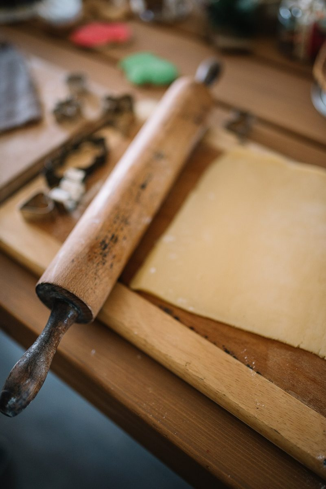

出品票 No.002
店のこと
お店について確認できているのは、所在地・電話番号・Instagramのアカウントだけです。
このページの「想像してみる」部分は、制作側が想像して書いたものです。お店の実際の様子・考え・メニューとは関係がありません。
確認できていること
- 店名は「SPICE american bake shop」、業種はベーカリー(焼き菓子)
- 所在地は群馬県桐生市本町5丁目63-3(〒376-0031)
- 電話番号は0277-32-3240
- Instagramのアカウントは @spice_american_bakeshop
- 営業時間・定休日・メニュー・価格・ご予約・駐車場は準備中

想像してみる
屋号を「審査票」に見立てると
お店の名前の由来は分かりません。制作側は、スパイスの名前を持つ屋号から、棚に並ぶ小さな瓶や、レシピのメモを思い浮かべました。そこから「品評会の出品票」というたとえを作っただけで、実際のお店の姿ではありません。



材料の写真
粉のイメージ

写真はお店とは関係のないフリー素材で、使っている材料・道具を示すものではありません。